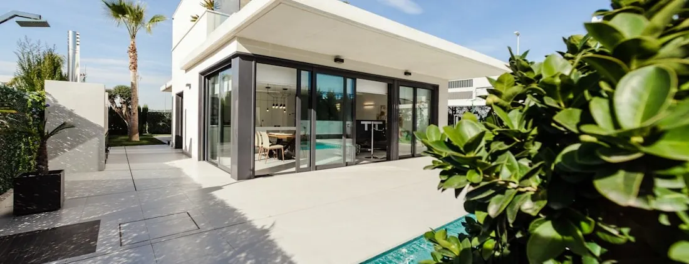

Building envelope
Impact Windows & Doors in South Florida
The one service here that is not landscape work. It is a change to the outside shell of your house, and it is governed accordingly.
A different kind of project from everything else on this site
Patios, decks, turf and fencing all happen outside the walls. This one changes the walls. Windows and exterior doors are part of the building envelope — the continuous shell that separates conditioned inside from unconditioned outside — and altering that shell is regulated work with documentation, permits and inspections attached to it.
It also attracts more unreliable marketing than any other product a homeowner buys for their house. Percentages, ratings, discounts, lifetime promises: a great deal of it is repeated by people who have never read the document it supposedly came from. So this page is written the other way round. It explains what the decisions actually are and what paperwork answers each one, and where a number would normally be quoted, it tells you which document to ask for instead.
If that seems cautious, it is deliberate. On a subject where the claims are this specific and this checkable, the trustworthy contractor is the one who says less and shows you more.
What it is for
The envelope is only as good as its openings
A masonry wall is substantial. The holes cut into it for light, air and access are the parts that move, the parts that are glazed, and the parts that a storm can find. Protecting openings is the whole idea behind impact-rated products, and the reasoning is worth understanding rather than taking on faith.
Keeping the outside out. Wind-borne debris is what breaks a window in a storm, and the point of an impact-rated assembly is that the opening stays closed against it. Impact products are designed and tested as complete assemblies — glass, frame and fixings together — which is why how a unit is installed matters as much as which unit it is.
Keeping the pressure balance. Once an opening fails, wind enters the house and the loads on the roof and the remaining walls change. That is the reason the openings get so much attention in this part of the country: they are the weak points of the whole shell.
Every day, not just in a storm. Water and air infiltration, security and noise are all part of what an exterior opening does, and they are the things a homeowner actually notices in an ordinary year.
What we are careful not to do here is attach numbers to any of that. Impact products carry test and approval documentation specific to the product and its configuration, and those documents are the correct source — not a paragraph on a contractor's website.

Local conditions
What South Florida does to an opening
Storm season is the reason people call. The other fifty weeks of the year are what wear the assembly out.
Sun, relentlessly
Ultraviolet exposure works on seals, gaskets and finishes year-round. West and south elevations take the worst of it, and they are usually the first openings to show their age.
Humidity and heat
A large temperature and humidity difference across a thin assembly, most of the year, with condensation behaviour that follows from it. It is a harder environment for a window than a temperate climate is.
Wind-driven rain
Rain arriving horizontally finds paths that vertical rain never tests. Most leaks people blame on a window are actually about the perimeter seal and the detailing around it.
Salt air near the coast
Closer to the water, the corrosive load on frames, fixings and hardware is significantly higher, and it is a real input into material and hardware selection rather than a detail.
Storm season
A defined part of the year when the openings are what the house depends on — and, practically, a period during which scheduling this kind of work needs more thought.
The house's own history
Age and construction type change what is possible at each opening. A 1960s block house, a 1990s tract build and a recent construction present three different sets of conditions behind the trim.
How to judge a proposal
Ask for the document, not the adjective
Impact windows and doors are one of the most heavily marketed home products in the state, and the marketing has a house style: a strong adjective, a specific-sounding number and no source. It is worth knowing how to cut through it, whoever you end up buying from.
Numbers belong to products, not to categories
Performance figures — structural, water, air, thermal, acoustic — are established for a specific product in a specific configuration and size. They do not transfer to a different model, a different size or a different installation detail. A number quoted without naming which product and which configuration it came from is not information you can use.
Approvals are documents with numbers on them
Products used in this region carry approval documentation, and the correct way to check that something is suitable for your opening is to read the document covering that product and confirm the opening is within what it describes. We deliberately do not list approvals, ratings or product names on this page: what is current, and what is right for your opening, is established at the time of your project from the documentation itself.
Installation is part of the performance
An assembly performs as tested only if it is installed the way the documentation requires — the right fixings, at the right spacing, into the right substrate, with the perimeter sealed as specified. This is the least visible part of the job and the part most worth being fussy about. Ask any contractor how they will install to the manufacturer's requirements, and listen to whether the answer is specific.
What a good proposal contains
The product for each opening, the configuration, what is happening to the existing frame, what finishing work is included inside and out, what is being submitted for permit, and what documentation you will be given at the end. Everything else is decoration.
Carefully stated
Energy and comfort, without the percentage
Homeowners frequently notice differences after an opening is replaced — a room that had been uncomfortable in the afternoon, glare, outside noise, draughts around an old frame. Those are real experiences and it is fair to talk about them.
What is not fair is turning them into a number. How much heat and light a window admits depends on the glazing make-up, the frame, the size and orientation of the opening, the shade already falling on it and how the house is cooled. Two identical windows on opposite elevations of the same house do not behave the same way. A single percentage offered to every homeowner is therefore a marketing device, not a measurement of your property, and we do not use one.
What we can do is more useful. Manufacturers publish performance data for each product, and those figures are comparable between products because they are measured the same way. At proposal stage we can show you the documentation for what is being offered and talk through how it applies to a particular elevation of your house. That is a conversation about your openings rather than a slogan.
Comfort is worth separating out from energy, too. Reduced outside noise, fewer draughts around a failing frame, and less glare in a specific room are the changes people report most, and they are the changes least well captured by any single figure. If one room is the reason you are considering this work, say so at the survey — it can change what gets specified for that opening.
The same discipline applies to insurance. Whether anything changes on your policy is a matter for your carrier, on your policy, with their documentation requirements. It is not something a contractor should be promising you.
Choosing
Product selection, opening by opening
A house is rarely one product throughout. Each opening has a job, and the job decides the type before anything else does.
| Type | Where it suits | Worth thinking about |
|---|---|---|
| Single hung | Bedrooms, bathrooms and secondary elevations. The most common residential window in the region and usually the most economical per opening. | Only part of the opening ventilates, and the sash arrangement divides the view. |
| Horizontal roller | Wide openings where a sash sliding sideways suits the room better than one sliding up. | Track cleaning becomes part of the upkeep, and the same partial-ventilation trade-off applies. |
| Casement and awning | Openings where full ventilation matters, and awnings where a window needs to stay open in rain. | They need swing clearance outside, which rules them out beside a walkway or a narrow side yard. |
| Fixed picture | Views and daylight where nothing needs to open — often paired with an operable unit alongside. | No ventilation at all, so the room's air has to come from somewhere else. |
| Sliding glass doors | The main connection between the house and a terrace, patio or pool deck, and usually the largest assembly on the property. | The biggest opening is the one where product, structure and installation detail all matter most. Track and threshold detailing deserves attention. |
| Hinged patio and entry doors | Secondary garden access and the front entrance, where the door is also part of the elevation people see first. | Hardware, threshold and weather detail are what make the difference day to day, and glazed panels are part of the assembly. |
Frames
Aluminum and vinyl are the frames most often discussed for this region, and they differ in appearance, in sightline width, in thermal behaviour and in how they handle coastal exposure. Which is appropriate depends on the opening, the elevation, the look you want and the documentation for the specific product — so it is a survey conversation, not a rule.
Glass
Impact glazing is a laminated make-up — an interlayer bonded between glass plies — and the specific build-up varies between products. Coatings and tints affect how much solar energy and light come through, and they are chosen per elevation rather than uniformly. Every one of those choices is described in the product's own documentation, which is where the comparison should be made.
Hardware and screens
Locks, handles, rollers and hinges are what you touch every day and what wears first. On a coastal property their specification matters more. Screens, where they are wanted, are worth deciding at order stage rather than adding afterwards.
Appearance
Frame colour and sightline change an elevation considerably, and they are hard to reverse. Looking at the actual profiles rather than a photograph is worth the time, particularly on a front elevation or on a wall of sliding doors facing the yard.
The existing house
Replacement considerations
New construction chooses openings freely. A replacement inherits them, and what is behind the trim decides much of the job.
How much comes out
Some replacements can work within the existing frame where it is sound and suitable, disturbing very little. Others need the old frame removed entirely, which affects the stucco or trim outside and the finish inside. Which applies is established at survey by examining the openings, not assumed from the age of the house — and it materially changes the scope, the schedule and the finishing work.
Wall construction
Masonry and frame walls behave differently at an opening, and fixing requirements follow the substrate. Older properties also produce surprises behind the trim, which is why an allowance for what is found is more honest than a fixed assumption.
Sizes are rarely uniform
Openings in an existing house are frequently not the sizes the drawings say, and they are not always identical to each other. Every opening is measured individually before anything is ordered. This is the step that a rushed quote skips and a delivery of the wrong sizes later exposes.
Egress and use
Some openings do more than admit light. Where an opening serves a function of that kind, changing its type or its operable area is not a free choice, and it is checked as part of the survey rather than at installation.
What is attached to the opening now
Shutters, security bars, blinds, curtain tracks, alarm contacts and awnings all interact with the opening. What is being removed, what is being refitted and what will no longer fit are worth listing before work starts, because it is a common source of disappointment at the end of an otherwise good job.
Finishing back
The join between a new unit and the existing wall is where the work is judged. Stucco, trim, sealant and interior finish all form part of it, and a proposal should say exactly what finishing is included at each opening. Ask if it does not.

Approvals
Permitting, at a general level
Replacing windows and exterior doors is regulated work here, and permitting and inspection are normally part of a project. That much is safe to say generally. What is not safe to say generally is what your project specifically requires, because that is set by the municipality and county your property sits in and it differs between them.
So the shape of it, rather than the detail: there is a submittal that identifies the products and the openings, a review, the work itself, and an inspection. Product documentation is typically part of what gets submitted, which is why selection and permitting are handled together — choosing products first and discovering later that the paperwork does not support the openings is the wrong order.
Where a property is governed by an association, its approval is a separate matter from the municipal one, and it can have views on the appearance of what faces the street. It is worth starting that conversation early because it tends to be the slower track.
We handle the permitting process for the work we carry out, and we confirm the requirements that apply to your address as part of the project rather than working from a general rule. We do not name codes, fees or review times on this page. Any of those we published would be a snapshot, and a snapshot of the wrong jurisdiction is worse than nothing.
Keep the paperwork
At the end of the project you should hold the permit and inspection records, the documentation for the products installed, and the manufacturer's own warranty paperwork. Those documents are what a future buyer, inspector or insurer will ask to see, and they are considerably harder to reconstruct years later than to file now.
How it runs
Installation planning, and living through it
Unlike the rest of our work, this happens at the walls of an occupied house. The planning is as much about your week as about the openings.
-
Survey every opening
Each opening measured and examined individually: how the existing unit is fitted, what the wall is made of, what is attached inside and out, and what will be involved in taking it out. Nothing is ordered from a schedule of assumed sizes.
-
Specify against the documentation
Product, configuration and hardware chosen per opening and checked against the manufacturer's documentation for that product, with the elevation and use of each opening taken into account.
-
Proposal and permitting
Scope written per opening — including what happens to the existing frame and what finishing is included — then the submittal made and the requirements confirmed for the property before anything is ordered.
-
Order and lead time
Units are made to the measured sizes, so there is a wait between order and installation. Where the work is being coordinated with outdoor work, that wait is the thing the rest of the programme is planned around.
-
Sequenced installation
Openings worked in groups with the sequence agreed in advance, the intention being that no opening is left without a window or door overnight. Interior protection, access and dust control are set up before the first unit comes out, and weather is watched, because an opening is briefly open.
-
Finish, inspect, hand over
Perimeter sealing and finishing back inside and out, hardware adjusted and demonstrated, inspection attended, site cleared, and the documentation handed over as a set rather than promised later.
Practicalities worth agreeing in advance
Which rooms are affected on which days, clear access inside and outside each opening, where pets will be, whether anyone is working from home behind one of the openings, and what happens to blinds and curtains. None of it is complicated; all of it is easier settled before the first day than during it.

Why Arco
Fewer claims, more paperwork
Documentation over adjectives
We show you the manufacturer's documentation for what is proposed rather than reducing it to a headline number that cannot be traced back to anything.
One project, one point of contact
Where the openings are part of a wider outdoor project, they are sequenced with it rather than bolted on, and the same team is accountable for both.
Licensed and insured
Work on the building envelope should only be carried out by a licensed contractor. Ours is Florida Certified Building Contractor licence CBC1269393, and it is published in the footer of this site for you to check.
Areas we serve
Impact window and door work across South Florida
Common questions
Impact window and door questions we are asked most
How much will impact windows lower my energy bill?
We will not give you a percentage, and we would treat any contractor who does with caution. What a window does to the heat and light entering a room depends on the specific product, its glazing make-up, its orientation, how much shade the opening already has and how the house is cooled — so a single figure quoted to every homeowner cannot be a measurement of anything. What is fair to say is that glazing and frames differ measurably in how they perform, that those differences are published by manufacturers for each product, and that we will show you those documents for whatever is being proposed rather than summarising them into a number.
Will new windows get me an insurance discount?
That is a question for your insurer, and only your insurer can answer it for your policy. Whether anything changes, and on what basis, depends on the carrier, the policy and the documentation they ask to see. We do not make representations about insurance outcomes, and we would rather tell you that plainly than let an expectation build. What we can do is make sure you receive the permit and product documentation for the work, since that is generally what a carrier or inspector will want to look at.
Is a permit required to replace windows and doors?
Replacing windows and exterior doors is regulated work in South Florida, and permitting and inspection are normally part of it. What exactly is required, what has to be submitted and how the inspection runs are set by the municipality and county the property sits in, so we confirm the requirements for your address rather than publishing a general rule here. Documentation for the specific products is typically part of a submittal, which is one reason product selection and permitting are handled together rather than in sequence.
Can the work be done a few openings at a time?
Yes, and it is how most occupied houses are done. Openings are worked in groups, and the intention is that no opening is left without a window or a door overnight. Planning around that means agreeing the sequence in advance, clearing access inside and out at each opening, and having a plan for pets and for anyone working from home. Weather is the variable that moves a schedule, since an opening is temporarily open while the change is made.
How much of the wall gets disturbed?
That depends on how the existing window is fitted and how the wall is built, and it is established at survey rather than guessed. Some replacements can work within the existing frame and disturb very little. Others require the old frame to come out entirely, which affects the stucco or trim outside and the finish inside. It is worth settling early, because it determines what finishing work is in the scope, and a proposal that is quiet about it is a proposal worth questioning.
Why does this service sit alongside patios and pool decks?
Because on a lot of properties they are the same project. The wall that faces the terrace is usually the wall with the largest glazing in the house, and replacing sliding doors while a deck or patio is being rebuilt is far less disruptive than doing it afterwards — the access, the levels at the threshold and the protection of finished surfaces all get planned once. Where the work is only the openings, it runs as its own project with its own survey, permit and schedule.
Start with a survey of the openings
Every opening measured and examined, products proposed against their own documentation, and the permitting requirements for your address confirmed — before anything is ordered.